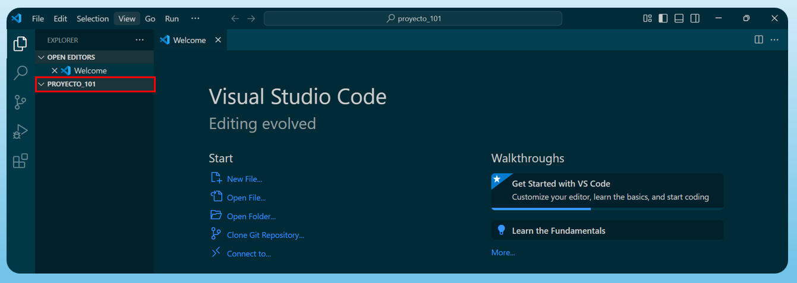
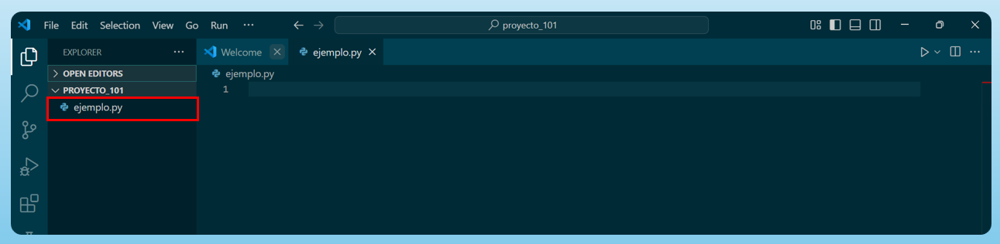
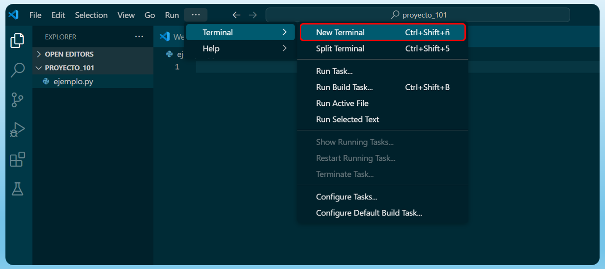
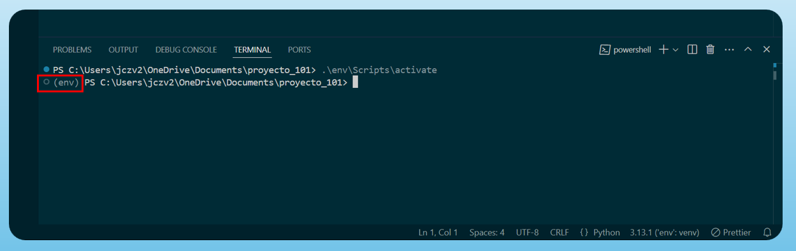
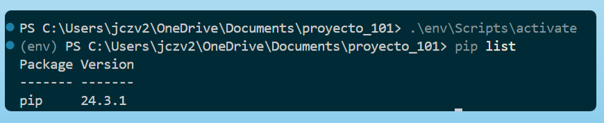
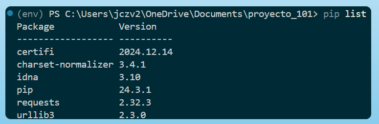
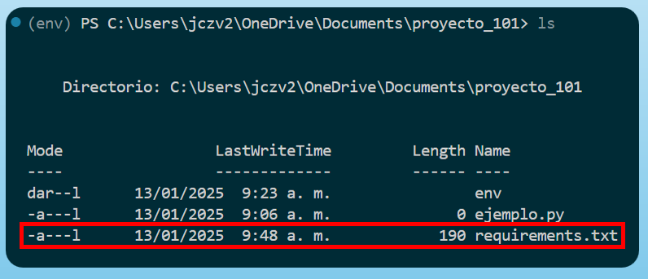
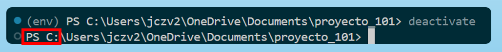

Ambientes Virtuales en Python
#
En este tutorial veremos cómo se crean ambientes virtuales en Python empleando la librería venv. Las aplicaciones en Python suelen utilizar paquetes y módulos que no forman parte de la biblioteca estándar. En ocasiones, las aplicaciones necesitan una versión específica de una biblioteca porque requieren que se haya corregido un error particular o porque fueron desarrolladas usando una versión anterior de la biblioteca.
Esto significa que una única instalación de Python puede no ser capaz de satisfacer los requisitos de todas las aplicaciones. Por ejemplo, si la aplicación A necesita la versión 1.0 de un módulo en particular, pero la aplicación B requiere la versión 2.0, los requisitos entran en conflicto. Instalar la versión 1.0 o la 2.0 dejará a una de las aplicaciones sin poder ejecutarse.
La solución a este problema es crear un entorno o ambiente virtual, que es un árbol de directorios independiente que contiene una instalación de Python para una versión específica, junto con un conjunto de paquetes adicionales.
De esta forma, diferentes aplicaciones pueden usar diferentes entornos virtuales. Para resolver el ejemplo anterior de requisitos en conflicto, la aplicación A puede tener su propio entorno virtual con la versión 1.0 instalada, mientras que la aplicación B tiene otro entorno virtual con la versión 2.0. Si la aplicación B necesita actualizar una biblioteca a la versión 3.0, esto no afectará el entorno de la aplicación A.
💡 Importante: En resumen un ambiente virtual en Python es una carpeta aislada donde puede instalar las dependencias de su proyecto sin afectar el entorno global de Python en su computadora. Esto es útil cuando trabaja en múltiples proyectos con diferentes requisitos de paquetes o versiones.
1. Cómo crear ambientes virtuales
Ahora que sabemos qué es un ambiente virtual, veremos cómo se crean y se activan estos ambientes, para lo cual crearemos una nueva carpeta llamada proyecto_101 y la abrimos en Visual Studio Code.

El siguiente paso es crear un archivo de Python llamado ejemplo.py

Para crear el ambiente virtual, abriremos una terminal, como se muestra en la imagen siguiente.

Una vez realizado el paso anterior, procederemos a crear el ambiente virtual utilizando en la terminal los comandos correspondientes según su sistema operativo:
Sistema Operativo |
Comando |
|---|---|
Windows |
|
macOS |
|
Linux |
|
💡 Nota: Sustituya
nombre_del_entornopor el nombre que desee asignar al ambiente virtual.
A modo de ejemplo, en este caso el nombre del entorno sera env, así al momento de utilizar el comando correspondiente podra ver que esto generará una carpeta llamada env que contendrá el ambiente virtual.
2. Cómo activar el ambiente virtual
El siguiente paso es activar el ambiente virtual. Al igual que al momento de crearlo, utilizaremos un comando específico según el sistema operativo que esté utilizando para activarlo.
Sistema Operativo |
Comando para Activar el Ambiente Virtual |
|---|---|
Windows (cmd) |
|
macOS |
|
Linux |
|
Si todo está bien, notará que el nombre del ambiente env aparece al inicio de su línea de comandos.

3. Instalar paquetes en el ambiente virtual
En el caso de que queramos ver los paquetes que están instalados en el ambiente virtual utilizaremos el comando pip list, que mostrará los paquetes junto con sus versiones

Si desea instalar un paquete, puede hacerlo con el comando pip install nombre_del_paquete. Por ejemplo, instalaremos el paquete requests. Para ver los paquetes instalados en el ambiente, puede usar el comando pip list. Como podrá notar, después de instalar requests, verá tanto el paquete como sus dependencias en la lista.

4. Guardar las dependencias en un archivo
Cuando haya terminado de trabajar en su entorno virtual y quiera compartir el proyecto con otros o moverlo a otro sistema, es útil guardar una lista de las dependencias que ha instalado. Para hacer esto, puede usar el siguiente comando:
pip freeze > requirements.txt
Este comando guarda todas las dependencias y sus versiones actuales en un archivo llamado requirements.txt. Este archivo se puede compartir con otras personas para que puedan instalar las mismas dependencias en su entorno.
Al ejecutar el comando ls, verá que se ha creado un archivo requirements.txt en su directorio actual que en este caso nombramos como proyecto_101. Si abre este archivo, verá la lista de todos los paquetes y sus versiones que se están utilizando en el entorno.

5. Instalar las dependencias desde un archivo requirements.txt
Si otra persona quiere trabajar en su proyecto o si desea reinstalar las dependencias en otro ambiente, simplemente necesita el archivo requirements.txt. Para instalar las dependencias, use el siguiente comando:
pip install -r requirements.txt
Este comando lee el archivo requirements.txt e instala todos los paquetes que están listados en él, asegurando que se instalen las versiones correctas para el proyecto.
Es una práctica común ver este archivo en proyectos de Python o repositorios de GitHub, y siempre que descargue un proyecto de Python, generalmente tendrá que crear un entorno virtual e instalar las dependencias desde este archivo.
6. Desactivar el ambiente virtual
Finalmente, pero no menos importante, una vez hayamos terminado de trabajar en el proyecto es importante desactivar el ambiente virtual, que en este caso se nombró como venv. Esto significa salir del entorno aislado y regresar al entorno global de Python. Para desactivar un entorno virtual, simplemente ejecute el siguiente comando en su terminal: deactivate
Una vez ejecutado, verá que el prefijo que muestra el nombre del entorno virtual, en este caso venv, desaparece de su terminal, indicando que ha salido del entorno virtual.

Con este tutorial ya aprendimos a crear, activar y desactivar entornos virtuales en Python, instalar dependencias, y gestionar sus proyectos de manera aislada y eficiente.
Universidad de los Andes | Vigilada Mineducación. Reconocimiento como Universidad: Decreto 1297 del 30 de mayo de 1964. Reconocimiento personería jurídica: Resolución 28 del 23 de febrero de 1949 Minjusticia. Departamento de Ingeniería Industrial Carrera 1 Este No. 19 A 40 Bogotá, Colombia Tel. (57.1) 3324320 | (57.1) 3394949 Ext. 2880 /2881 http://industrial.uniandes.edu.co